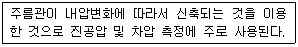

가스기능사 (2012-07-22 기출문제)
1과목: 가스안전관리
1. 안전관리자가 상주하는 사무소와 현장사무소와의 사이 또는 현장사무소 상호간 신속히 통보할 수 있도록 통신시설을 갖추어야 하는데 이에 해당되지 않는 것은?
- 구내방송설비
- 메가폰
- 인터폰
- 페이징설비
(정답률: 83%)

2. 1몰의 아세틸렌가스를 완전연소하기 위하여 몇 몰의 산소가 필요한가?
- 1몰
- 1.5몰
- 2.5몰
- 3몰
(정답률: 79%)
3. 고압가스의 용어에 대한 설명으로 틀린 것은?
- 액화가스란 가압, 냉각 등의 방법에 의하여 액체상태로 되어 있는 것으로서 대기압에서의 끓는점이 섭씨 40도 이하 또는 상용의 온도 이하인 것을 말한다.
- 독성가스란 공기 중에 일정량이 존재하는 경우 인체에 유해한 독성을 가진 가스로서 허용농도가 100만분의 2000 이하인 가스를 말한다.
- 초저온저장탱크라 함은 섭씨 영하 50도 이하의 액화가스를 저장하기 위한 저장탱크로서 단열재로 씌우거나 냉동 설비로 냉각하는 등의 방법으로 저장탱크 내의 가스온도가 상용의 온도를 초과하지 아니하도록 한 것을 말한다.
- 가연성가스라 함은 공기 중에서 연소하는 가스로서 폭발한계의 하한이 10% 이하인 것과 폭발한계의 상한과 하한의 차가 20% 이상인 것을 말한다.
(정답률: 90%)
4. 고압가스안전관리법에서 정하고 있는 특수고압가스에 해당되지 않는 것은?
- 아세틸렌
- 포스핀
- 압축모노실란
- 디실란
(정답률: 69%)
5. 다음 중 동일차량에 적재하여 운반할 수 없는 경우는?
- 산소와 질소
- 질소와 탄산가스
- 탄산가스와 아세틸렌
- 염소와 아세틸렌
(정답률: 92%)
6. 천연가스 지하 매설 배관의 퍼지용으로 주로 사용되는 가스는?
- N2
- Cl2
- H2
- O2
(정답률: 89%)
7. 독성가스 제조시설 식별표지의 글씨 색상은? (단, 가스의 명칭은 제외한다.)
- 백색
- 적색
- 황색
- 흑색
(정답률: 64%)
8. 다음 중 폭발성이 예민하므로 마찰 타격으로 격렬히 폭발하는 물질에 해당되지 않는 것은?
- 메틸아민
- 유화질소
- 아세틸라이드
- 염화질소
(정답률: 66%)
9. 고압가스를 제조하는 경우 가스를 압축해서는 아니 되는 경우에 해당하지 않는 것은?
- 가연성가스(아세틸렌, 에틸렌 및 수소 제외) 중 산소량이 전체용량의 4% 이상인 것
- 산소 중의 가연성가스의 용량이 전체 용량의 4% 이상인 것
- 아세틸렌, 에틸렌 또는 수소 중의 산소용량이 전체 용량의 2% 이상인 것
- 산소 중의 아세틸렌, 에틸렌 및 수소의 용량 합계가 전체용량의 4% 이상인 것
(정답률: 61%)
10. 지하에 설치하는 지역정압기에서 시설의 조작을 안전하고 확실하게 하기 위하여 필요한 조명도는 얼마를 확보하여야 하는가?
- 100룩스
- 150룩스
- 200룩스
- 250룩스
(정답률: 87%)
11. 공기 중에서의 폭발 하한값이 가장 낮은 가스는?
- 황화수소
- 암모니아
- 산화에틸렌
- 프로판
(정답률: 80%)
12. 가스도매사업의 가스공급시설 중 배관을 지하에 매설할 때의 기준으로 틀린 것은?
- 배관은 그 외면으로부터 수평거리로 건축물까지 1.0m 이상을 유지한다.
- 배관은 그 외면으로부터 지하의 다른 시설물과 0.3m 이상의 거리를 유지한다.
- 배관을 산과 들에 매설할 때는 지표면으로부터 배관의 외면까지의 매설깊이를 1m 이상으로 한다.
- 배관은 지반 동결로 손상을 받지 아니하는 깊이로 매설한다.
(정답률: 64%)
13. 아세틸렌을 용기에 충전하는 때에 사용하는 다공물질에 대한 설명으로 옳은 것은?
- 다공도가 55% 이상 75% 미만의 석회를 고루 채운다.
- 다공도가 65% 이상 82% 미만의 목탄을 고루 채운다.
- 다공도가 75% 이상 92% 미만의 규조토를 고루 채운다.
- 다공도가 95% 이상인 다공성 플라스틱을 고루 채운다.
(정답률: 92%)
14. 고압가스안전관리법에서 정하고 있는 보호시설이 아닌 것은?
- 의원
- 학원
- 가설건축물
- 주택
(정답률: 82%)
15. 다음 가스폭발의 위험성 평가기법 중 정량적 평가 방법은?
- HAZOP(위험성운전 분석기법)
- FTA(결함수 분석기법)
- Check List법
- WHAT-IF(사고예상질문 분석기법)
(정답률: 76%)
16. 도시가스사업법령에 따른 안전관리자의 종류에 포함되지 않는 것은?
- 안전관리 총괄자
- 안전관리 책임자
- 안전관리 부책임자
- 안전점검원
(정답률: 80%)
17. 독성가스 배관은 2중관 구조로 하여야 한다. 이때 외층관 내경은 내층관 외경의 몇 배 이상을 표준으로 하는가?
- 1.2
- 1.5
- 2
- 2.5
(정답률: 52%)
18. 액화석유가스 충전사업자의 영업소에 설치하는 용기저장소 용기보관실 면적의 기준은?
- 9m2 이상
- 12m2 이상
- 19m2 이상
- 21m2 이상
(정답률: 57%)
19. 자연발화의 열의 발생 속도에 대한 설명으로 틀린 것은?
- 초기 온도가 높은 쪽이 일어나기 쉽다.
- 표면적이 작을수록 일어나기 쉽다.
- 발열량이 큰 쪽이 일어나기 쉽다.
- 촉매 물질이 존재하면 반응 속도가 빨라진다.
(정답률: 85%)
20. 암모니아 충전용기로서 내용적이 1000L 이하인 것은 부식여유치가 A 이고, 염소 충전용기로서 내용적이 1000L 초과하는 것은 부식여유치가 B 이다. A와 B항의 알맞은 부식 여유치는?
- A : 1㎜, B : 2㎜
- A : 1㎜, B : 3㎜
- A : 2㎜, B : 5㎜
- A : 1㎜, B : 5㎜
(정답률: 76%)
21. 다음 중 고압가스관련설비가 아닌 것은?
- 일반압축가스배관용 밸브
- 자동차용 압축천연가스 완속충전설비
- 액화석유가스용 용기잔류가스회수장치
- 안전밸브, 긴급차단장치, 역화방지장치
(정답률: 64%)
22. 고압가스일반제조시설의 저장탱크 지하 설치기준에 대한 설명으로 틀린 것은?
- 저장탱크 주위에는 마른모래를 채운다.
- 지면으로부터 저장탱크 정상부까지의 깊이는 30㎝ 이상으로 한다.
- 저장탱크를 매설한 곳의 주위에는 지상에 경계표지를 한다.
- 저장탱크에 설치한 안전밸브는 지면에서 5m 이상 높이에 방출구가 있는 가스방출관을 설치한다.
(정답률: 73%)
23. 아황산가스의 제독제로 갖추어야 할 것이 아닌 것은?
- 가성소다수용액
- 소석회
- 탄산소다수용액
- 물
(정답률: 66%)
24. 산소 압축기의 윤활유로 사용되는 것은?
- 석유류
- 유지류
- 글리세린
- 물
(정답률: 88%)
25. 아세틸렌이 은, 수은과 반응하여 폭발성의 금속 아세틸라이드를 형성하여 폭발하는 형태는?
- 분해폭발
- 화합폭발
- 산화폭발
- 압력폭발
(정답률: 80%)
26. 가연성가스 또는 독성가스의 제조시설에서 자동으로 원재료의 공급을 차단시키는 등 제조설비 안의 제조를 제어할 수 있는 장치를 무엇이라고 하는가?
- 인터록기구
- 벤트스택
- 플레어스택
- 가스누출검지경보장치
(정답률: 89%)
27. 지상에 설치하는 정압기실 방호벽의 높이와 두께기준으로 옳은 것은?
- 높이 2m, 두께 7㎝ 이상의 철근콘크리트벽
- 높이 1.5m, 두께 12㎝ 이상의 철근콘크리트벽
- 높이 2m, 두께 12㎝ 이상의 철근콘크리트벽
- 높이 1.5m, 두께 15㎝ 이상의 철근콘크리트벽
(정답률: 80%)
28. 도시가스도매사업제조소에 설치된 비상공급시설 중 가스가 통하는 부분은 최소사용압력의 몇 배 이상의 압력으로 기밀시험이나 누출검사를 실시하여 이상이 없는 것으로 하는가?
- 1.1
- 1.2
- 1.5
- 2.0
(정답률: 57%)
29. 용기 종류별 부속품의 기호 중 압축가스를 충전하는 용기의 부속품을 나타낸 것은?
- LG
- PG
- LT
- AG
(정답률: 85%)
30. “시·도지사는 도시가스를 사용하는 자에게 퓨즈 콕 등 가스안전 장치의 설치를 ( ) 할 수 있다.” 괄호 안에 알맞은 말은?
- 권고
- 강제
- 위탁
- 시공
(정답률: 86%)
2과목: 가스장치 및 기기
31. 고압식 액화산소 분리장치에서 원료공기는 압축기에서 어느 정도 압축되는가?
- 40 ~ 60atm
- 70 ~ 100atm
- 80 ~ 120atm
- 150 ~ 200atm
(정답률: 62%)
32. 수은을 이용한 U자관 압력계에서 액주높이(h) 600㎜, 대기압(P1)은 1kg/cm2 일 때 P2는 약 몇 kg/cm2인가?
- 0.22
- 0.92
- 1.82
- 9.16
(정답률: 67%)
33. 조정기를 사용하여 공급가스를 감압하는 2단 감압방법의 장점이 아닌 것은?
- 공급압력이 안정하다.
- 중간배관이 가늘어도 된다.
- 각 연소기구에 알맞은 압력으로 공급이 가능하다.
- 장치가 간단하다.
(정답률: 75%)
34. LNG의 주성분인 CH4의 비점과 임계온도를 절대온도(K)로 바르게 나타낸 것은?
- 435K, 355K
- 111K, 355K
- 435K, 283K
- 111K, 283K
(정답률: 61%)
35. 재료의 저온하에서의 성질에 대한 설명으로 가장 거리가 먼 것은?
- 강은 암모니아 냉동기용 재료로서 적당하다.
- 탄소강은 저온도가 될수록 인장강도가 감소한다.
- 구리는 액화분리장치용 금속재료로서 적당하다.
- 18-8 스테인리스강은 우수한 저온장치용 재료이다.
(정답률: 66%)
36. 수소취성을 방지하는 원소로 옳지 않은 것은?
- 텅스텐(W)
- 바나듐(V)
- 규소(Si)
- 크롬(Cr)
(정답률: 69%)
37. 온도계의 선정방법에 대한 설명 중 틀린 것은?
- 지시 및 기록 등을 쉽게 행할 수 있을 것
- 견고하고 내구성이 있을 것
- 취급하기가 쉽고 측정하기 간편할 듯
- 피측 온체의 화학반응 등으로 온도계에 영향이 있을 것
(정답률: 87%)
38. 펌프의 캐비테이션에 대한 설명으로 옳은 것은?
- 캐비테이션은 펌프 임펠러의 출구부근에 더 일어나기 쉽다.
- 유체 중에 그 액온의 증기압보다 압력이 낮은 부분이 생기면 캐비테이션이 발생한다.
- 캐비테이션은 유체의 온도가 낮을수록 생기기 쉽다.
- 이용 NPSH > 필요 NPSH 일 때 캐비테이션을 발생한다.
(정답률: 66%)
39. LP가스를 자동차용 연료로 사용할 때의 특징에 대한 설명 중 틀린 것은?
- 완전연소가 쉽다.
- 배기가스에 독성이 적다.
- 기관의 부식 및 마모가 적다.
- 시동이나 급가속이 용이하다.
(정답률: 81%)
40. 원거리 지역에 대량의 가스를 공급하기 위하여 사용되는 가스 공급 방식은?
- 초저압 공급
- 저압 공급
- 중압 공급
- 고압 공급
(정답률: 81%)
41. 다음은 무슨 압력계에 대한 설명인가?

- 벨로우즈압력계
- 다이어프램압력계
- 부르동관압력계
- U자관식압력계
(정답률: 70%)
42. 공기의 액화 분리에 대한 설명 중 틀린 것은?
- 질소가 정류탑의 하부로 먼저 기화되어 나간다.
- 대량의 산소, 질소를 제조하는 공업적 제조법이다.
- 액화의 원리는 임계온도 이하로 냉각시키고 임계압력 이상으로 압축하는 것이다.
- 공기 액화 분리장치에서는 산소가스가 가장 먼저 액화된다.
(정답률: 61%)
43. 증기 압축식 냉동기에서 실제적으로 냉동이 이루어지는 곳은?
- 증발기
- 응축기
- 팽창기
- 압축기
(정답률: 61%)
44. 직동식 정압기의 기본 구성요소가 아닌 것은?
- 안전밸브
- 스프링
- 메인밸브
- 다이어프램
(정답률: 54%)
45. 가연성가스의 제조설비 내에 설치하는 전기기기에 대한 설명으로 옳은 것은?
- 1종 장소에는 원칙적으로 전기설비를 설치해서는 안 된다.
- 안전중 방폭구조는 전기기기의 불꽃이나 아크를 발생하여 착화원이 될 염려가 있는 부분을 기름 속에 넣은 것이다.
- 2종 장소는 정상의 상태에서 폭발성 분위기가 연속하여 또는 장시간 생성되는 장소를 말한다.
- 가연성가스가 존재할 수 있는 위험장소는 1종 장소, 2종 장소 및 0종 장소로 분류하고 위험장소에서는 방폭형 전기기기를 설치하여야 한다.
(정답률: 73%)
3과목: 가스일반
46. 다음 중 온도가 가장 높은 것은?
- 450 °R
- 220 K
- 2 °F
- -5 ℃
(정답률: 63%)
47. 다음 중 염소의 용도로 적합하지 않는 것은?
- 소독용으로 사용된다.
- 염화비닐 제조의 원료이다.
- 표백제로 사용된다.
- 냉매로 사용된다.
(정답률: 74%)
48. 부탄(C4H10) 용기에서 액체 580g이 대기 중에 방출되었다. 표준 상태에서 부피는 몇 L가 되는가?
- 150
- 210
- 224
- 230
(정답률: 72%)
49. 다음 중 비점이 가장 낮은 기체는?
- NH3
- C3H8
- N2
- H2
(정답률: 57%)
50. 도시가스에 첨가되는 부취제 선정 시 조건으로 틀린 것은?
- 물에 잘 녹고 쉽게 액화될 것
- 토양에 대한 투과성이 좋을 것
- 독성 및 부식성이 없을 것
- 가스배관에 흡착되지 않을 것
(정답률: 61%)
51. 가연성가스 배관의 출구 등에서 공기 중으로 유출하면서 연소하는 경우는 어느 연소 형태에 해당하는가?
- 확산연소
- 증발연소
- 표면연소
- 분해연소
(정답률: 77%)
52. 다음 중 수소가스와 반응하여 격렬히 폭발하는 원소가 아닌 것은?
- O2
- N2
- Cl2
- F2
(정답률: 75%)
53. “모든 기체 1몰의 체적(V)은 같은 온도(T), 같은 압력(P)에서 모두 일정하다.”에 해당하는 법칙은?
- Dalton의 법칙
- Henry의 법칙
- Avogadro의 법칙
- Hess의 법칙
(정답률: 86%)
54. 액화석유가스에 관한 설명 중 틀린 것은?
- 무색투명하고 물에 잘 녹지 않는다.
- 탄소의 수가 3~4개로 이루어진 화합물이다.
- 액체에서 기체로 될 대 체적은 150배로 증가한다.
- 기체는 공기보다 무거우며, 천연고무를 녹인다.
(정답률: 56%)
55. 0℃에서 온도를 상승시키면 가스의 밀도는?
- 높게 된다.
- 낮게 된다.
- 변함이 없다.
- 일정하지 않다.
(정답률: 66%)
56. 이상기체에 잘 적용될 수 있는 조건에 해당되지 않는 것은?
- 온도가 높고 압력이 낮다.
- 분자 간 인력이 작다.
- 분자크기가 작다.
- 비열이 작다.
(정답률: 58%)
57. 60℃의 물 300kg 과 20℃의 물 800kg을 혼합하면 약 몇 ℃의 물이 되겠는가?
- 28.2
- 30.9
- 33.1
- 37
(정답률: 53%)
58. 착화원이 있을 때 가연성액체나 고체의 표면에 연소하한계 농도의 가연성 혼합기가 형성되는 최저온도는?
- 인화온도
- 임계온도
- 발화온도
- 포화온도
(정답률: 69%)
59. 암모니아의 성질에 대한 설명으로 옳은 것은?(오류 신고가 접수된 문제입니다. 반드시 정답과 해설을 확인하시기 바랍니다.)
- 상온에서 약 8.46atm 이 되면 액화한다.
- 불연성의 맹독성 가스이다.
- 흑갈색의 기체로 물에 잘 녹는다.
- 염화수소와 만나면 검은 연기를 발생한다.
(정답률: 55%)
60. 표준상태에서 에탄 2mol, 프로판 5mol, 부탄 3mol로 구성된 LPG에서 부탄의 중량은 몇 % 인가?
- 13.2
- 24.6
- 38.3
- 48.5
(정답률: 53%)